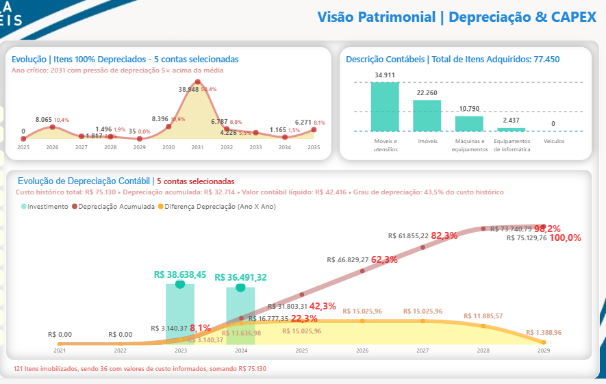
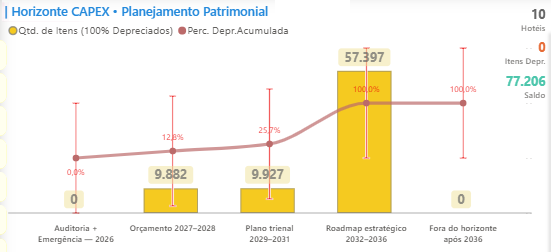

Dashboards em Ação
Galeria com exemplos de visualizações desenvolvidas. Cada uma conta uma história diferente dos dados.

CAPEX
Planejamento patrimonial estratégico com análise de ciclo de vida, depreciação e projeção de investimentos para decisões de alto impacto.

Sazonalidade
Identificação de padrões de demanda, antecipação de picos e vales, suporte a planejamento operacional e otimização de estoque.

NPS & CSAT
Monitoramento contínuo da satisfação e lealdade do cliente, com análise de feedback e insights acionáveis em tempo real.

ARR Simulado
Projeções de crescimento e participação de mercado, permitindo simulações de cenários e tomada de decisão estratégica orientada a dados.

Horizonte CAPEX
Timeline detalhado de investimentos com ROI previsto, priorização de ativos e suporte à estratégia financeira de longo prazo.

Panorama Operacional
Controle de SLAs, conformidade e performance operacional, oferecendo visão integrada de riscos e eficiência dos processos.
Cada dashboard é único — adaptado ao seu negócio, aos seus processos, às suas decisões. Esses são exemplos reais que mostram como organizamos dados em inteligência acionável.